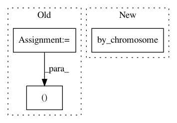

fa662d348e088ad1709f554aa5268e7a774a0fe8,cnvlib/coverage.py,,interval_coverages_count,#Any#Any#Any#,62
Before Change
key=lambda r: r[0]):
// Thunk and reshape this chromosome"s intervals
echo("Processing chromosome", chrom, "of", os.path.basename(bam_fname))
_chroms, starts, ends, names = zip(*rows_iter)
counts_depths = [region_depth_count(bamfile, chrom, s, e, min_mapq)
for s, e in zip(starts, ends)]
for start, end, name, (count, depth) in zip(starts, ends, names,
After Change
def interval_coverages_count(bed_fname, bam_fname, min_mapq):
Calculate log2 coverages in the BAM file at each interval.
bamfile = pysam.Samfile(bam_fname, "rb")
for chrom, subregions in RA.read(bed_fname).by_chromosome():
echo("Processing chromosome", chrom, "of", os.path.basename(bam_fname))
for _chrom, start, end, name, in subregions.coords(["name"]):
count, depth = region_depth_count(bamfile, chrom, start, end,
In pattern: SUPERPATTERN
Frequency: 4
Non-data size: 3
Instances
Project Name: etal/cnvkit
Commit Name: fa662d348e088ad1709f554aa5268e7a774a0fe8
Time: 2015-08-13
Author: eric.talevich@gmail.com
File Name: cnvlib/coverage.py
Class Name:
Method Name: interval_coverages_count
Project Name: etal/cnvkit
Commit Name: 6372bff538de67595fda0183964a8df4b9b105fb
Time: 2016-12-08
Author: eric.talevich@gmail.com
File Name: cnvlib/antitarget.py
Class Name:
Method Name: guess_chromosome_regions
Project Name: etal/cnvkit
Commit Name: b28c8e24e23c60282a1c7cd82a4a7d09bb9715b6
Time: 2016-08-31
Author: eric.talevich@gmail.com
File Name: cnvlib/coverage.py
Class Name:
Method Name: interval_coverages_count
Project Name: etal/cnvkit
Commit Name: 89361f771b5076918b1ce9be9a7d4f2738569ae0
Time: 2015-11-09
Author: eric.talevich@gmail.com
File Name: cnvlib/antitarget.py
Class Name:
Method Name: guess_chromosome_regions